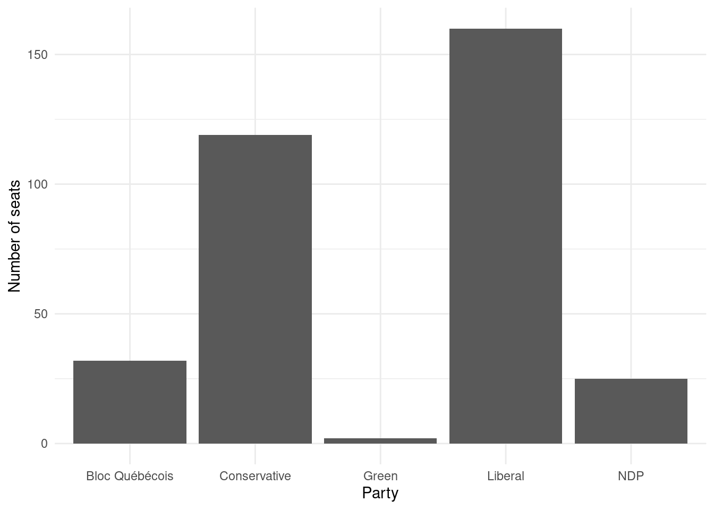

#### Preamble ####
# Purpose: Read in data from the 2021 Canadian Federal Election and make
# a graph of the number of seats each party won.
# Author: Stephanie Lu
# Email: steph.lu@mail.utoronto.ca
# Date: 8 January 2024
# Prerequisites: Know where to get Canadian elections data.Tutorial 2
#### Workspace setup ####
library(tidyverse)── Attaching core tidyverse packages ──────────────────────── tidyverse 2.0.0 ──
✔ dplyr 1.1.4 ✔ readr 2.1.4
✔ forcats 1.0.0 ✔ stringr 1.5.1
✔ ggplot2 3.4.4 ✔ tibble 3.2.1
✔ lubridate 1.9.3 ✔ tidyr 1.3.0
✔ purrr 1.0.2
── Conflicts ────────────────────────────────────────── tidyverse_conflicts() ──
✖ dplyr::filter() masks stats::filter()
✖ dplyr::lag() masks stats::lag()
ℹ Use the conflicted package (<http://conflicted.r-lib.org/>) to force all conflicts to become errorslibrary(janitor)
Attaching package: 'janitor'
The following objects are masked from 'package:stats':
chisq.test, fisher.testsimulated_data <-
tibble(
# Use 1 through to 338 to represent each division
"Elected Candidate" = 1:338,
# Randomly pick an option, with replacement, 338 times
"Party" = sample(
x = c("Liberal", "Conservative", "Bloc Québécois", "NDP", "Green"),
size = 338,
replace = TRUE
)
)
simulated_data# A tibble: 338 × 2
`Elected Candidate` Party
<int> <chr>
1 1 Conservative
2 2 Liberal
3 3 NDP
4 4 Bloc Québécois
5 5 Green
6 6 Bloc Québécois
7 7 Liberal
8 8 Green
9 9 Bloc Québécois
10 10 Bloc Québécois
# ℹ 328 more rows#### Read in the data ####
raw_elections_data <-
read_csv(
file =
"https://www.elections.ca/res/rep/off/ovr2021app/53/data_donnees/table_tableau11.csv",
show_col_types = FALSE,
skip = 0
)
# We have read the data from the Elections Canada website. We may like to save
# it in case something happens or they move it.
write_csv(
x = raw_elections_data,
file = "canadian_voting.csv"
)head(raw_elections_data)# A tibble: 6 × 13
Province Electoral District N…¹ Electoral District N…² Population
<chr> <chr> <dbl> <dbl>
1 Newfoundland and Lab… Avalon 10001 86494
2 Newfoundland and Lab… Bonavista--Burin--Tri… 10002 74116
3 Newfoundland and Lab… Coast of Bays--Centra… 10003 77680
4 Newfoundland and Lab… Labrador 10004 27197
5 Newfoundland and Lab… Long Range Mountains 10005 86553
6 Newfoundland and Lab… St. John's East/St. J… 10006 85697
# ℹ abbreviated names: ¹`Electoral District Name/Nom de circonscription`,
# ²`Electoral District Number/Numéro de circonscription`
# ℹ 9 more variables: `Electors/Électeurs` <dbl>,
# `Polling Stations/Bureaux de scrutin` <dbl>,
# `Valid Ballots/Bulletins valides` <dbl>,
# `Percentage of Valid Ballots /Pourcentage des bulletins valides` <dbl>,
# `Rejected Ballots/Bulletins rejetés` <dbl>, …tail(raw_elections_data)# A tibble: 6 × 13
Province Electoral District N…¹ Electoral District N…² Population
<chr> <chr> <dbl> <dbl>
1 British Columbia/Col… Vancouver South/Vanco… 59040 102927
2 British Columbia/Col… Victoria 59041 117133
3 British Columbia/Col… West Vancouver--Sunsh… 59042 119113
4 Yukon Yukon 60001 35874
5 Northwest Territorie… Northwest Territories… 61001 41786
6 Nunavut Nunavut 62001 35944
# ℹ abbreviated names: ¹`Electoral District Name/Nom de circonscription`,
# ²`Electoral District Number/Numéro de circonscription`
# ℹ 9 more variables: `Electors/Électeurs` <dbl>,
# `Polling Stations/Bureaux de scrutin` <dbl>,
# `Valid Ballots/Bulletins valides` <dbl>,
# `Percentage of Valid Ballots /Pourcentage des bulletins valides` <dbl>,
# `Rejected Ballots/Bulletins rejetés` <dbl>, …#### Basic cleaning ####
raw_elections_data <-
read_csv(
file = "canadian_voting.csv",
show_col_types = FALSE
)# Make the names easier to type
cleaned_elections_data <-
clean_names(raw_elections_data)
# Have a look at the first six rows
head(cleaned_elections_data)# A tibble: 6 × 13
province electoral_district_n…¹ electoral_district_n…² population
<chr> <chr> <dbl> <dbl>
1 Newfoundland and Lab… Avalon 10001 86494
2 Newfoundland and Lab… Bonavista--Burin--Tri… 10002 74116
3 Newfoundland and Lab… Coast of Bays--Centra… 10003 77680
4 Newfoundland and Lab… Labrador 10004 27197
5 Newfoundland and Lab… Long Range Mountains 10005 86553
6 Newfoundland and Lab… St. John's East/St. J… 10006 85697
# ℹ abbreviated names: ¹electoral_district_name_nom_de_circonscription,
# ²electoral_district_number_numero_de_circonscription
# ℹ 9 more variables: electors_electeurs <dbl>,
# polling_stations_bureaux_de_scrutin <dbl>,
# valid_ballots_bulletins_valides <dbl>,
# percentage_of_valid_ballots_pourcentage_des_bulletins_valides <dbl>,
# rejected_ballots_bulletins_rejetes <dbl>, …cleaned_elections_data <-
cleaned_elections_data |>
select(
electoral_district_name_nom_de_circonscription,
elected_candidate_candidat_elu
)
head(cleaned_elections_data)# A tibble: 6 × 2
electoral_district_name_nom_de_circonscription elected_candidate_candidat_elu
<chr> <chr>
1 Avalon McDonald, Ken Liberal/Libéral
2 Bonavista--Burin--Trinity Rogers, Churence Liberal/Libér…
3 Coast of Bays--Central--Notre Dame Small, Clifford Conservative/C…
4 Labrador Jones, Yvonne Liberal/Libéral
5 Long Range Mountains Hutchings, Gudie Liberal/Libér…
6 St. John's East/St. John's-Est Thompson, Joanne Liberal/Libér…names(cleaned_elections_data)[1] "electoral_district_name_nom_de_circonscription"
[2] "elected_candidate_candidat_elu" cleaned_elections_data <-
cleaned_elections_data |>
rename(
electoral_district = electoral_district_name_nom_de_circonscription,
elected_candidate = elected_candidate_candidat_elu
)
head(cleaned_elections_data)# A tibble: 6 × 2
electoral_district elected_candidate
<chr> <chr>
1 Avalon McDonald, Ken Liberal/Libéral
2 Bonavista--Burin--Trinity Rogers, Churence Liberal/Libéral
3 Coast of Bays--Central--Notre Dame Small, Clifford Conservative/Conservateur
4 Labrador Jones, Yvonne Liberal/Libéral
5 Long Range Mountains Hutchings, Gudie Liberal/Libéral
6 St. John's East/St. John's-Est Thompson, Joanne Liberal/Libéral cleaned_elections_data <-
cleaned_elections_data |>
separate(
col = elected_candidate,
into = c("Other", "party"),
sep = "/"
) |>
select(-Other)cleaned_elections_data$party |>
unique()[1] "Libéral" "Conservateur"
[3] "Bloc Québécois" "NPD-Nouveau Parti démocratique"
[5] "Parti Vert" cleaned_elections_data <-
cleaned_elections_data |>
mutate(
party =
case_match(
party,
"Libéral" ~ "Liberal",
"Bloc Québécois" ~ "Bloc Québécois",
"Parti Vert" ~ "Green",
"Conservateur" ~ "Conservative",
"NPD-Nouveau Parti démocratique" ~ "NDP"
)
)
head(cleaned_elections_data)# A tibble: 6 × 2
electoral_district party
<chr> <chr>
1 Avalon Liberal
2 Bonavista--Burin--Trinity Liberal
3 Coast of Bays--Central--Notre Dame Conservative
4 Labrador Liberal
5 Long Range Mountains Liberal
6 St. John's East/St. John's-Est Liberal write_csv(
x = cleaned_elections_data,
file = "cleaned_canadian_elections_data.csv"
)#### Read in the data ####
cleaned_elections_data <-
read_csv(
file = "cleaned_canadian_elections_data.csv",
show_col_types = FALSE
)cleaned_elections_data |>
count(party)# A tibble: 5 × 2
party n
<chr> <int>
1 Bloc Québécois 32
2 Conservative 119
3 Green 2
4 Liberal 160
5 NDP 25cleaned_elections_data |>
ggplot(aes(x = party)) +
geom_bar() +
theme_minimal() + # Make the theme neater
labs(x = "Party", y = "Number of seats") # Make labels more meaningful